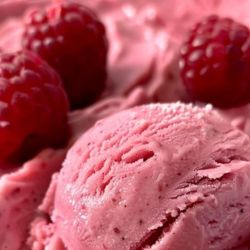

“In summer, the song sings itself.”
– William Carlos Williams
Summer radiates warmth and energy, inviting us to bask in sunny days, relish cool treats, and enjoy vibrant outdoor adventures. This season occurs
Here we have some ideas on seasonal activities to do and delicious food to enjoy summer to the fullest
Activities to DO
• Go to a Beach OR a Waterfalls •
Summer is the perfect time to visit beaches and waterfalls, offering a refreshing escape from the heat. Beaches provide an opportunity to relax on the warm sand, enjoy thrilling water sports, or simply take a swim in the cool ocean. Waterfalls, on the other hand, offer a serene atmosphere where you can feel the mist on your skin and bask in nature's beauty. Whether you're seeking adventure or tranquility, both are ideal summer destinations!
• Learn Swimming •
Summer is the best season to dive into learning how to swim! It’s not only a life-saving skill but also a great way to stay cool and fit during the hot weather. Whether you join a class or learn at a local pool, swimming helps build confidence and provides a fun workout.
• Make a Sun Catcher •
A sun catcher is a beautiful decorative item that catches sunlight and creates colorful reflections in your space. Made from materials like glass, crystals, or beads, they can be hung in windows or outdoors to add a pop of color to your summer days. As sunlight hits them, they reflect vibrant rainbows, making them a perfect addition to brighten up your home or garden during the sunny months!
• Ice Cream Party •
Gather your friends or family, set up a fun ice cream bar with a variety of flavors and toppings, and enjoy a sweet treat together. From classic cones to sundae creations, everyone can customize their perfect ice cream delight.
• Boating •
Boating is a fantastic summer activity that lets you enjoy the water in a relaxing and adventurous way. Whether you're cruising along a lake, riding the waves at sea, or paddling in a kayak, being on a boat offers a sense of freedom and exploration. It's perfect for fishing, watersports, or simply soaking in the sun while floating peacefully.
Food
• Ice creams and Sorbets •
Ice creams and sorbets are the ultimate summer treats, offering a cool and refreshing way to beat the heat. Ice cream, with its creamy, rich texture, comes in endless flavors, while sorbets provide a fruity, dairy-free alternative with a light, tangy sweetness.

• Lemonade and Lassi •
Lemonade and lassi are two refreshing drinks that are perfect for quenching your thirst in the summer heat. Lemonade, with its tangy and sweet citrus flavor, is a classic go-to for a cool, revitalizing drink. Lassi, a creamy yogurt-based beverage from India, can be served sweet or savory, offering a smooth, cooling effect.
• Simple Curd Rice, Tamarind Rice, Lemon Rice and Tomato Rice •
These comforting rice dishes are a perfect way to enjoy a light and flavorful summer meal. Curd Rice, made with creamy yogurt and seasoned with mustard seeds and curry leaves, offers a cooling effect in the heat. Tamarind Rice brings a tangy and slightly spicy kick with its tamarind-based seasoning. Lemon Rice is zesty, with a fresh citrus flavor and mild spices, while Tomato Rice offers a rich, savory taste from cooked tomatoes and spices. These dishes are easy to prepare, delicious, and ideal for a warm summer day!
• Cucumber Salad •
Cucumber salad is a light, refreshing dish perfect for the hot summer days. The refreshing crunch of cucumber is a healthy, hydrating and easy to make side dish.